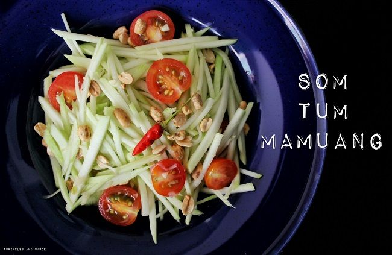

Here's how you can make your own Tasty and Healthy Green Papaya Salad.
.jpeg)
Ingredients
- 1 ½ cups julienned green papaya, soak in ice water for 10-15 minutes
- 2 cloves garlic
- Thai chilies, to taste
- 1 ½ Tbsp palm sugar, finely chopped, packed
- 2-3 long beans, cut into 2-inch pieces
- 3 Tbsp roasted peanuts (see note)
- 1 heaping tablespoon small dried shrimp, roughly chop if you have large ones
- 2 Tbsp fresh lime juice
- 2 tsp tamarind paste
- 1 ½ Tbsp fish sauce
- ½ cup grape tomato halves or a small tomato cut into wedges
Note: I prefer buying peanuts and roast them.
Instruction
-
Drain the soaked papaya well and place in a bowl lined with 2 layers of
paper towel to absorb excess water. You want to have as little water on
the papaya as possible so as to not dilute the dressing.
-
In a large mortar and pestle, pound garlic and chilies until there are
no more big chunks (pieces of chili skin are fine).
-
Add palm sugar and mash with the pestle until it turns into a wet paste
and all the chunks are dissolved.
-
Add long beans and pound just until they're broken.
-
Add dried shrimp and peanuts and pound to break the peanuts up slightly.
-
Add fish sauce, tamarind paste, and lime juice, adding the squeezed lime
skin into the mortar as well for extra lime fragrance. Stir with a large
spoon to mix and dissolve the sugar.
-
Add shredded papaya and tomatoes, and mix using the pound-and-flip method
. Once everything looks well mixed and the tomatoes
are just slightly crushed, it's done!
-
Plate and sprinkle with the remaining peanuts.
-
Serve with sticky rice and BBQ chichken
